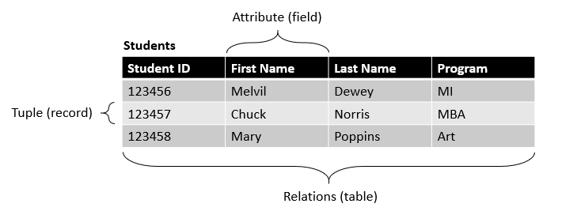
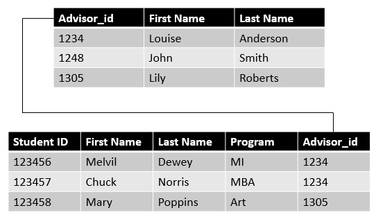

2 Relational databases (Pt. 1)
2.1 Learning objectives
Concepts
- Mission and objectives statements
- Relational databases
- Subjects and attributes
- Database rules
Practical skills
- Writing a mission and objectives statement for your database (team assignment #1)
- Creating database tables and fields (team assignment #2)
- Documenting databases (team assignment #2)
2.2 What is a relational database?
Relational databases store relations that are represented as tables. Each column of a table is an attribute (also called field, column, variable or feature). I will call fields from now on), and tuples (or records) are a set of attributes. For example, consider the table below, which is a set of relations representing students. Each record is a unique student defined by four attributes: their student ID, first name, last name, and program. The subject represented in this table are the students, and the same set of limited features represents all the students. No student can exist in this database with different features than the others. A relational database is a collection of tables linked to one another, each representing a different subject (courses, buildings, animals, concerts, orders, conversations, families, foods, games, or anything that we wish to capture in the database), and each with their own set of fields, and records.

The figure below shows how tables are linked to one another in the relational model.

In the next few weeks, you will learn how to design your own relational database, so let’s get started.
2.3 Mission and objectives
As I mentioned in the opening chapter of this book, databases are created for a specific purpose, and that purpose should be clearly defined before you start creating tables and fields and their relationships. This is the first step of the database design process that Hernandez (2013) proposes in his book, so let us start there are well.
2.3.1 Database mission statement
The database mission statement is a short text written in general and accessible language that states the specific purpose of your database. It is important to note that it is not the same as the organization’s mission statement for which the database will be designed. Instead, this statement refers specifically to the database and what the database will do for the organization. To keep that in mind as you formulate your database mission statement, you may want to start the text the following way:
The purpose of the name of organization and/or organizational unit database is…
This way you are less likely to forget that the database is what matters here.
Ideally, your database mission statement would be aligned with the organization’s mission for which it is intended, so having a good understanding of the organization’s mission is essential. In real life, this part of the database design process would likely involve conducting interviews with the key actors of the organization and across its different departments to ensure that you have a good idea of the needs that your database will be addressing. However, in the context of this course, you will not be conducting interviews. You will have to use your best judgment to ensure that your database mission statement is related to the organization’s mission. Also, since organizations usually state their missions on their website, you can certainly use that information to help you.
It should also be noted that the database that you will be proposing, and its mission statement, do not necessarily have to cover everything that an organization does. You could, for instance, choose to develop a database that would support the teaching mission of a university without considering or mentioning the other missions of the university, such as research.
Other constraints present in the context of the course, but not in real life, are the minimum number of specific tasks that your database should be supporting (5) and the minimum number of required tables in your database design (10). You can use these requirements to gauge whether your mission statement is too narrow or too broad.
2.3.1.1 A database for GummyBox
GummyBox is a new online store specializing in the sale and delivery of gummies and gummy assortments. The organization needs a database to support its operations. The company has multiple divisions with their own data needs. The HR department deals with employee records and data on pay and benefits, the purchasing department deals with orders to the suppliers, and the sales team handles customers’ orders. We decide to design a database that will support the operations of the sales department, and so we decide to name the database gummybox_sales and to formulate its mission as follows:
The purpose of the gummybox_sales database is to manage the data needed by the sales department to attend to the customers’ sweet tooth.
While it may seem a bit vague at first glance, this statement aligns with the organization’s mission and the operations of the sales department. The statement will thus provide some guidance as we get further in the database design process.
2.3.2 Database objectives statement
The database objectives are general tasks supported by the database. One way to distinguish them from the database mission is to remember that the mission statement relates to what the organization does. In contrast, the database objectives relate to the specific tasks or needs of people inside the organization (e.g., employees) or outside the organization (e.g., clients or users). Here are some examples:
- Keep track of students progress in their programs
- Maintain vehicle inventory
- Manage song collections
- Manage team roster
- Keep track of players performance
Here is a list of criteria to help you write a good objective statement:
- It represents a single task.
- It is clear.
- It does not contain unessential details.
- It states what the task is, but does not indicate how it will be done by the database.
2.3.2.1 Objectives for the gummybox_sales database
It was decided, after consultation with the GummyBox team, that their database will have the following objectives:
- Maintain customer information.
- Keep track of orders.
- Maintain information on gummies.
- Maintain information on gummy assortments.
- Collect product reviews.
2.4 Subjects and attributes
Now that we have established the mission and objectives that the database will be supporting, we need to ask ourselves two questions:
- What entities (objects and events) are needed to fulfill the mission and objectives of the database? These objects and events constitute the subjects (or entities). If the mission is to support the activities of a job placement agency, your subjects would likely include jobs, job-seekers, employers, and agents. For a university, you might want to include things like students, courses, instructors, and departments.
- What attributes of the subjects are needed to fulfill the mission and objectives of the database? This is where you list, for each of the subjects identified with the first question, the attributes that your database requires. If one of the subjects of your database is customers, you would likely want to include their name, and possibly their email or phone number. But do you need their address? their social insurance number? the name of their first pet? There is no universal answer, so you need to ask yourself this question for every table in your database, and answer it based on your judgement and the mission and objectives of the database.
Relational databases don’t impose rules on the subjects and attributes that you can include in your database. It does, however, impose rules on how these subjects and attributes must be captured in tables (subjects) and fields (attributes).
2.4.0.1 Subjects and attributes of the gummybox_sales database
If the objectives of your database are well formulated, they may already provide you with all the subjects you need for your database. Here are the objectives of the gummybox_sales database in which I highlighted the subjects.
- Maintain customer information.
- Keep track of orders.
- Maintain information on gummies.
- Maintain information on gummy assortments.
- Collect procuct reviews.
Identifying subjects is no more complicated then that. I have five: customer, order, gummy, gummy assortments, and reviews.
2.4.1 Database rules
Before we start building our database, it is important to identify or set rules that might constrain the values that an attribute can have for a single record or the relationships that can exist between two subjects.
An important question to ask when conceptualizing your database is whether a single instance of a subject (e.g., a specific customer, a specific gummy, or a specific order) can have multiple values for the same attribute. Consider, for instance, the customer subject of the gummybox_sales database. The attributes we identified are the customer’s name, email and address. We may want to consider whether or not a customer should be able to have multiple addresses. We can also consider whether the database should be able to attribute multiple colours of flavours to the same gummy. These decisions are database rules that we can make specify like this:
An individual customer can have more than one address.
An individual gummy can have multiple colours.
An individual gummy can have multiple flavours.
When conceptualizing your database, it is also important to consider rules that apply to the relationship between subjects. For example, one of the subjects in the gummybox_sales database is reviews. There are several decisions to make about reviews that may have an impact on the database design. Some relevant questions might be:
Do we accept reviews from everyone or do we only accept reviews from registered customers?
Can both individual gummies and gummy assortments be reviewed?
Can a customer provide a review for orders or only for products?
Can a customer review the same product multiple times?
The answer to these questions establish the nature of the relationship between the reviews and other subjects in the database such as gummies, gummy assortments, customers and orders. They also help ensuring that all the necessary attributes have been included.
We can also set rules to limit the specific values that an attribute can have. These rules are often implied in the database mission and objectives. For instance, if you are building a database of Electronic music and artists, it implies that other genres will not be included in the database. In this, case you could simply not consider genre at all in the attributes of our tables, or include a genre attribute with a rule specifying that the genre must be electronic. In the gummybox_sales database, we could decide to specify the different types of flavours that a gummy can have: sweet, salty, sour, bitter and umami.
Not all elements of your database needs explicit rules, but it is important to think about them early on to prevent headaches later in the process. It is also important to remember that the rules are decisions determined by the practices and needs of the organization and the database. They are not meant to reflect the absolute reality. For example, while it is a fact that a person can have multiple addresses in real-life, we are free to decide to allow only one address per customer in our database. Similarly, if we have a country attribute in our database, we are not obligated to consider the entire set of countries that exist in the world. We can limit the set of possible countries according to our needs. These choices can also sometimes be made out of convenience when certain rules increase the complexity of a database without clear benefits.
Important note: The most important rules to consider, especially for this course, are whether or not records can have multiple values for the same attribute (e.g. can a customer have more than one address?) and those that define relationship between subjects (e.g., are only customers allowed to post product reviews?). These rules have direct implications for your database design. On the other hand, while they can play a crucial role data validation and quality insurance purposes, value-limiting rules (e.g. the list of values that the country attribute can have) have little to no implications for your design. It is also easy to get carried away and start defining rules for all attributes that could contain a specific set of values, so you should avoid doing that and use these rules parsimoniously. Besides, they are not mandatory for the database design that you will produce in this course.
Finally, you should also avoid setting explicit rules when the relationship between subjects of your database is obvious. For instance, it is obvious that customers can place multiple orders and that orders can contain multiple products. Only define the rules when there are multiple suitable options for your design.
2.5 Summary
This chapter covered all the steps that deal with conceptual questions related to our database (i.e., those that are external to the requirements of the relational model) and you and your teammates should now be equipped to identify:
- The mission and objective of your database.
- The objects and events are included in the database
- The attributes of these objects and events that will be included in the database
- The rules that specify the number or set of values that an attribute can have for a single record, and the relationships that exists between subjects.
In the next chapter we will get one step closer to our fully operational database by converting that information into a set of tables, fields, and relationships that follow the rules of the relational model.
2.6 Homework
With your teammates:
Define the mission and objectives of your database.
Determine the subjects and attributes that will be considered in your database.
Define the database rules that will specify whether .
You can (but are not required) to use this template.
Remember that the decisions you make at this point are not set in stone and that you will be able to revisit them as you build your database, so don’t aim for perfection (yet)!